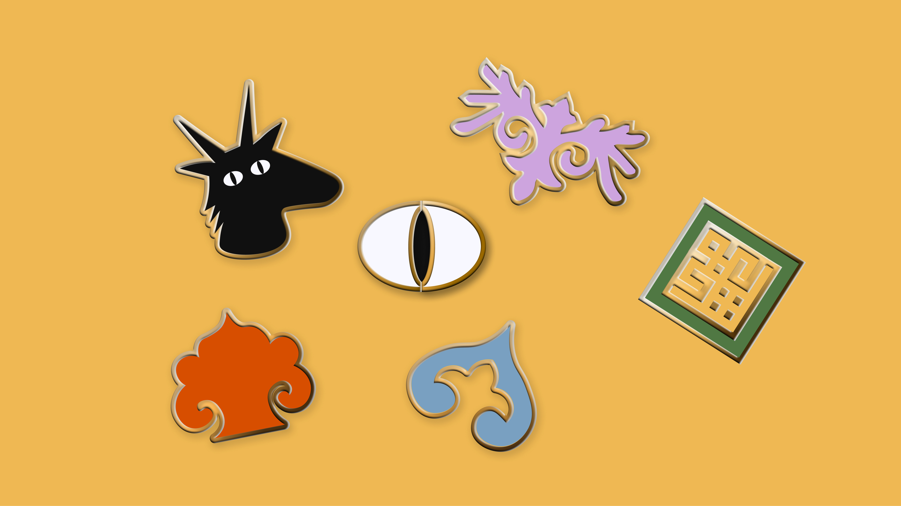
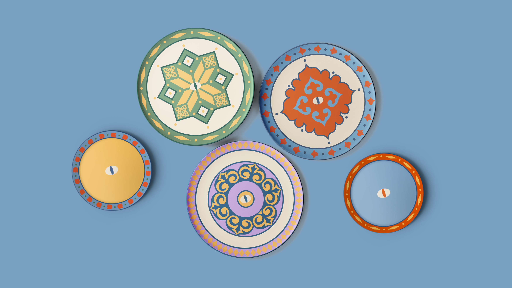
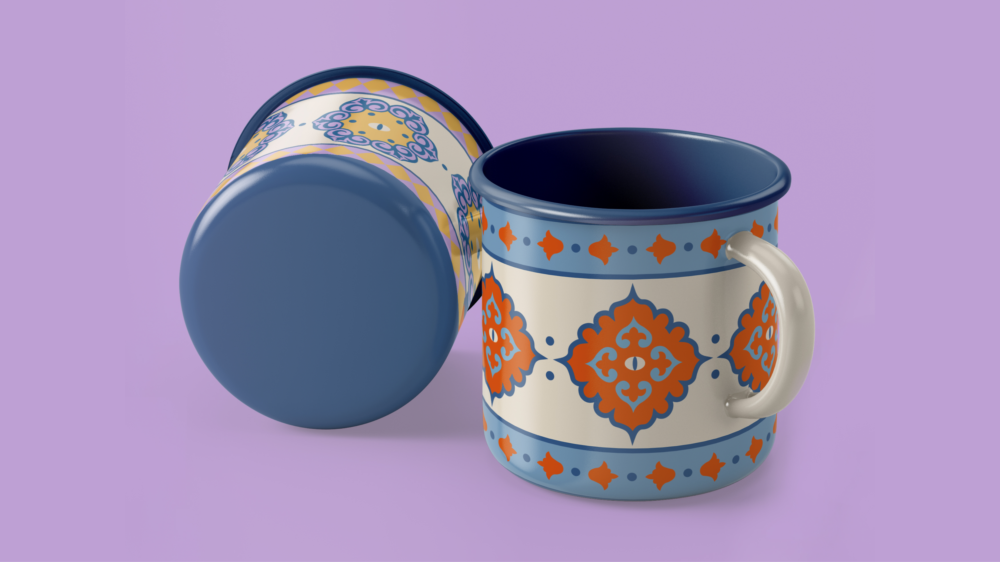
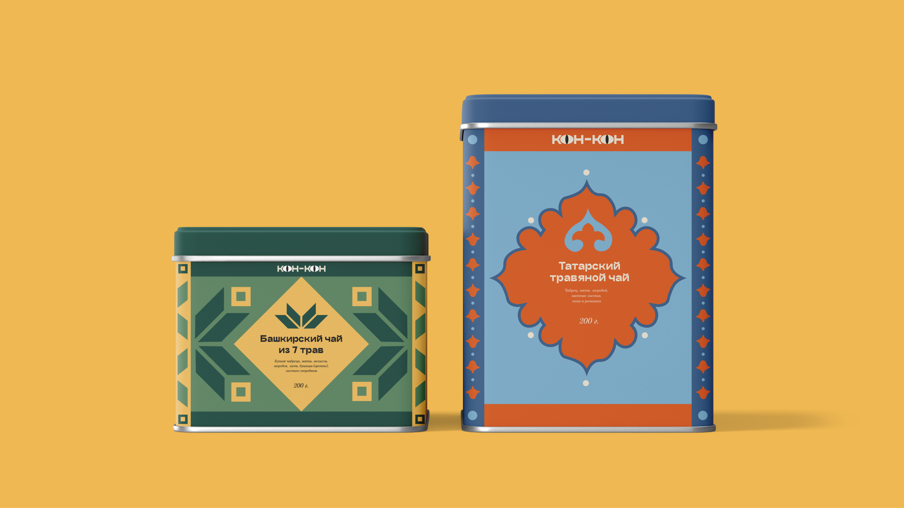
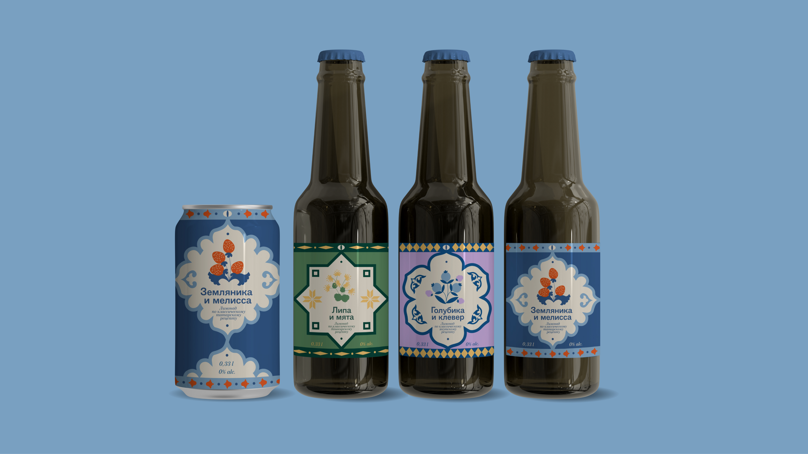
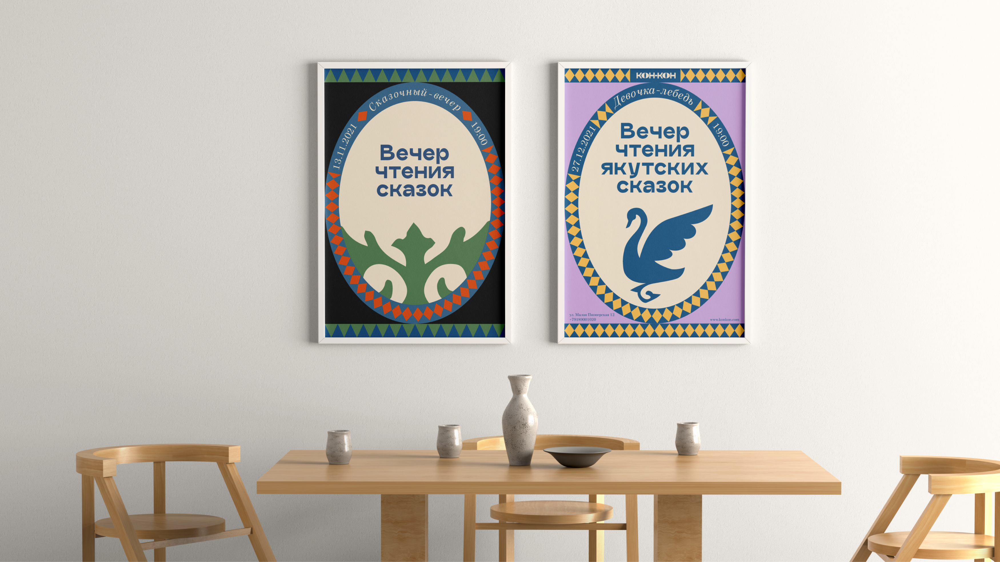
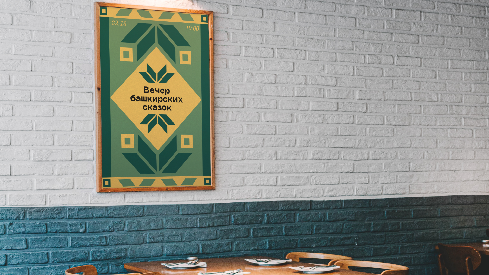

НОСИТЕЛИ
      
СТАЙЛГАЙД
Наш бренд про поиск себя и своей национальной идентичности — про ответ на вопрос «Кто я?»
Кон — в переводе с цыганского местоимение «кто». В названии мы используем лексический повтор, часто встречающийся в сказках: кон-кон — кто-кто (Кто-кто в теремочке живет?)
Мы верим, что повышение видимости малых народов может стать ключом к поиску и принятию своей идентичности в глобальном обществе
Логотип состоит из повторяющейся части текста и глаз, заменяющих букву «О», которые мы используем для оживления во всей системе айдентики.
Используются, когда логотип небходимо сильно уменьшить.
Мы никогда не используем красный цвет в логотипе в независимости от фона.
#DC6F3A
#E594A9
#EFB852
#79A0C1
#517D56
#003E33
#2D517F
#C4A4DD
В своем стиле мы используем только три основных цвета. При создании материалов, связанных конкретно с материалами для бренда, используются данные цвета:
При работе с материалами, связанными с конкретными народами, мы используем цвета из нашей расширенной палитры, которая была разработана на основе исследования самых распространенных цветов в орнаментах народов России.
Татары
Адыгейцы
Башкиры
Якуты
В качестве основного наборного шрифта мы используем 20 Kopeek.
Также данная гарнитура используется во всех интерфейсах сервиса.
Aa Bb Cc Dd Ee Ff Gg Hh Ii Jj Kk Ll Mm Nn Oo Pp Qq Rr Ss Tt Uu Vv Ww Xx Yy Zz
Аа Бб Вв Гг Дд Ее Ёё Жж Зз Ии Кк Лл Мм Нн Оо Пп Рр Сс Тт Уу Фф Хх Цц Чч Шш Щщ Ъъ Ьь Ээ Юю Яя
0 1 2 3 4 5 6 7 8 9
“?”(%)“!”{&}[*]#;@:
Для акциденции в плакатах и рекламных носителях используется Craftwork Grotesk.
Aa Bb Cc Dd Ee Ff Gg Hh Ii Jj Kk Ll Mm Nn Oo Pp Qq Rr Ss Tt Uu Vv Ww Xx Yy Zz
Аа Бб Вв Гг Дд Ее Ёё Жж Зз Ии Кк Лл Мм Нн Оо Пп Рр Сс Тт Уу Фф Хх Цц Чч Шш Щщ Ъъ Ьь Ээ Юю Яя
0 1 2 3 4 5 6 7 8 9
“?”(%)“!”{&}[*]#;@:
При наборе подписей и цифр мы применяем шрифт 21 Cent.
Aa Bb Cc Dd Ee Ff Gg Hh Ii Jj Kk Ll Mm Nn Oo Pp Qq Rr Ss Tt Uu Vv Ww Xx Yy Zz
Аа Бб Вв Гг Дд Ее Ёё Жж Зз Ии Кк Лл Мм Нн Оо Пп Рр Сс Тт Уу Фф Хх Цц Чч Шш Щщ Ъъ Ьь Ээ Юю Яя
0 1 2 3 4 5 6 7 8 9
“?”(%)“!”{&}[*]#;@:
Интерактивный сборник
сказок народов России
Размер: 3x
Line height: 100%
Интерактивный сборник
сказок народов России
Размер: 2x
Line height: 110%
Интерактивный сборник
сказок народов России
Размер: x
Line height: 120%
В макетах для веба используется только шрифт 20 Kopeek.
Заголовки и подписи разделов в макетах всегда набираются прописными буквами.
КАК НУЖНО ДЕЛАТЬ
ЗАГОЛОВОК
КАК НЕ НУЖНО ДЕЛАТЬ
Заголовок
Это основные составляющие элементы горизонтальных орнаментов, которые используются для оформления рамок. Также могут быть самостоятельными композиционными элементами
Элементы этой категории в основном используются в орнаментах с круговой симметрией или как самостоятельные декоративные элементы.
Взяты из национальных орнаментов и используются только в форматах, посвященных соответствющему народу
Эти элементы вдохновленны резьбой на наличниках в разных регионах России. Они представляют собой линейную композицию из геометрических и растительных орнаментов.
Используются как в вебе, так и на физических носителях.
Логотип всегда располагается в левом верхнем углу, либо сверху по центру композиции и перемещен в другие углы быть не может.
При использовании основного элемента в виде глаз его всегда необходимо помещать в центр композиции.
Орнаменты могут выступать как основными так и второстепенными элементами в стиле.
На небольших носителях или же при использовании в композиции радиальной сетки. Также элементы могут собираться в декоративные рандомные композиции, демонстрируя разнообразие различных народов и культур на территории России.
В рамках, собранных из различых элементов в макетах для веба или же в других подобных композициях.
Для нашей айдентики мы разработали гибкую систему сеток, которая используется для создания орнаментов и работы со всеми носителями и макетами.
Данная сетка имеет 8 осей, которые предназвачены для построение радиальной симметрии.
В месте пересечения осей всегда находится главный элемент в виде глаза. Далее по четырем основным осям выстраиваются самые главные и массивные элементы, которые дополняются другими деталями, расположенненными по осям между ними.
Для работы с макетами используется сетка, состоящая из 12 колонок.
При разрешении 1400px на 900px
20px — gutter
60px — margin
Данная сетка — это комбинация из классической сетки и радиальной, она используется для создания композиций с орнаментами в вебе.
Для работы с макетами используется сетка, состоящая из 12 колонок.
При разрешении 390px на 844px
20px — gutter
20px — margin
Состоит из 6 колонок. Также есть вариация для создания плакатов с орнаменатами к тематическим мероприятиям, посвященным различным народам.
Соотношение сторон 1:√2
20px — gutter
20px — margin